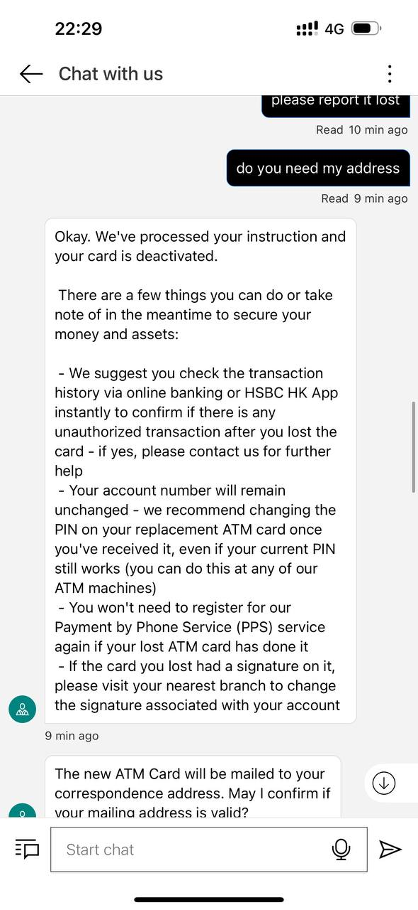
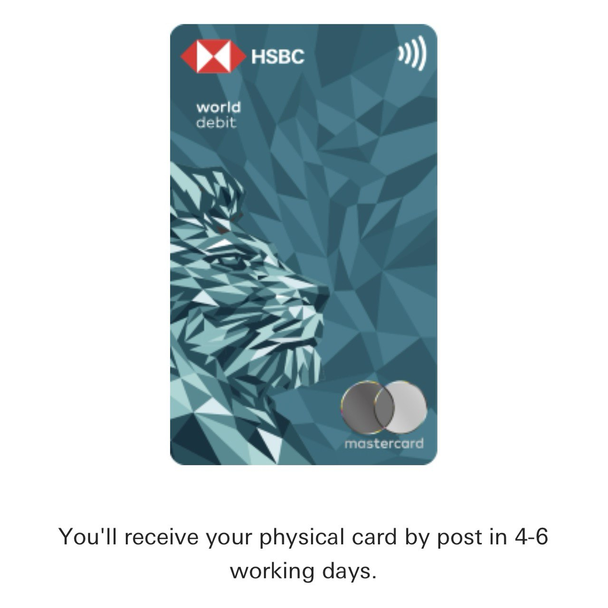

Singapurische und Hongkonger Bankerfahrung | Original, von KI übersetzt
Aktualisiert im September 2025.
Inhaltsverzeichnis
- HSBC-Debitkarten-Vorfall (Einbehaltung der Karte)
- Karte versehentlich am Geldautomaten einbehalten
- HSBC-Support über WhatsApp/App
- Ersatzkarte per Post innerhalb einer Woche zugesandt
- Eröffnung eines OCBC-Bankkontos
- Nur chinesischer Pass/Ausweis erforderlich
- Digitale App vereinfacht den Verifizierungsprozess
- Enthält 360-Konto mit Prämien
- Kartenaktivierung erfordert Filialbesuch
- Konto kann bei Inaktivität geschlossen werden
HSBC-Debitkarten-Vorfall (Einbehaltung der Karte)
Ich habe meine HSBC-Debitkarte im Mai 2023 in der Filiale Sha Tin in Hongkong erhalten. Leider wurde die Karte direkt am Geldautomaten vor der Filiale einbehalten.
Nach einigen Grundoperationen wollte ich die Karte aus dem Automaten zurücknehmen. Doch meine Tochter spielte herum und wollte die Karte berühren. Plötzlich wurde die Karte einbehalten.
Das war im Juli 2025. Zuerst schrieb ich HSBC über WhatsApp. Später wurde mir gesagt, ich solle die HSBC HK App nutzen, um mit ihnen zu kommunizieren.
Sie teilten mir Folgendes mit:
Vielen Dank für Ihre Geduld, Herr Li. Nach Überprüfung haben wir festgestellt, dass es eine ATM-Karte auf Ihren Namen gibt, die am 19. Mai 2023 ausgestellt wurde. Falls Sie diese Karte nicht erhalten haben, können wir sie als verloren melden und eine neue Karte für Sie ausstellen.
Möchten Sie, dass wir die Karte als verloren melden und eine neue ausstellen?
In Ordnung. Wir haben Ihre Anweisung bearbeitet und Ihre Karte wurde deaktiviert.
Hier sind einige Dinge, die Sie in der Zwischenzeit tun oder beachten sollten, um Ihr Geld und Ihre Vermögenswerte zu schützen:
- Wir empfehlen Ihnen, den Transaktionsverlauf über das Online-Banking oder die HSBC HK App zu überprüfen, um sicherzustellen, dass nach dem Verlust der Karte keine unautorisierten Transaktionen stattgefunden haben – falls doch, kontaktieren Sie uns bitte für weitere Hilfe.
- Ihre Kontonummer bleibt unverändert – wir empfehlen, die PIN Ihrer Ersatz-ATM-Karte zu ändern, sobald Sie sie erhalten haben, selbst wenn Ihre aktuelle PIN noch funktioniert (dies können Sie an jedem unserer Geldautomaten tun).
- Sie müssen sich nicht erneut für unseren Payment by Phone Service (PPS) registrieren, wenn Ihre verlorene ATM-Karte bereits registriert war.
- Falls die verlorene Karte eine Unterschrift aufwies, besuchen Sie bitte Ihre nächstgelegene Filiale, um die mit Ihrem Konto verbundene Unterschrift zu ändern.
Unsere ATM-Karten werden per normaler Post versandt. Es gibt keine Sendungsverfolgungsnummer.
In der Regel dauert die Zustellung an eine Adresse in Hongkong bis zu einer Woche, für Auslandsadressen 7–11 Werktage, abhängig von der Postlaufzeit.
Ich hoffe, dass es diesmal klappt. Lassen Sie uns auf die neue Karte warten.
 Quelle: Eigenes Screenshot
Ich erhielt die Karte um den 14. August 2025. Es war großartig. Ich probierte zwei HSBC-Geldautomaten in Guangzhou aus: einen in Taikoo Hui und einen in Tianhe City. Ich begann, die Details des Produkts zu lernen und zu verstehen, wie ich es effektiv nutzen kann, um mein Leben zu erleichtern. Ich versuchte auch, mich für die HSBC World Debit Card zu bewerben.
Die erhaltene Karte heißt HSBC UnionPay Debit Card. Als ich jedoch in einem 7-Eleven-Laden ein Getränk kaufen wollte, versuchte ich es mehrmals mit Hilfe des Personals, aber wir konnten die Karte nicht erfolgreich nutzen. Ich kenne den Grund immer noch nicht. Später erhöhte ich die Limits in der App. Ich werde es zu einem anderen Zeitpunkt erneut versuchen.
 Quelle: Eigenes Screenshot
Eröffnung eines OCBC-Bankkontos in China
12.07.2024
Dieser Blogbeitrag wurde mit Unterstützung von ChatGPT-4o verfasst.
Im heutigen digitalen Zeitalter ist die Verwaltung von Finanzen und der Zugang zu Cloud-Diensten einfacher denn je. Wenn Sie chinesischer Staatsbürger mit einem chinesischen Pass und Personalausweis sind, ist die Eröffnung eines Bankkontos bei OCBC Digital und die Nutzung dieses Kontos zur Registrierung für die Google Cloud Platform ein nahtloser Prozess. Hier ist eine Schritt-für-Schritt-Anleitung, die Sie durch den Prozess führt.

Schritt 1: Eröffnung eines OCBC-Bankkontos
Voraussetzungen:
- Chinesischer Pass
- Chinesischer Personalausweis
Vorgehensweise:
- Laden Sie die OCBC Digital App herunter:
- Gehen Sie zum App Store oder Google Play Store und laden Sie die OCBC Digital App herunter.
- Registrierung:
- Öffnen Sie die App und wählen Sie die Option zur Eröffnung eines neuen Kontos. Sie werden aufgefordert, Ihre persönlichen Daten anzugeben, einschließlich der Details Ihres chinesischen Passes und Personalausweises.
- Verifizierung:
- OCBC wird Sie auffordern, Ihre Identität zu bestätigen. Dies kann das Fotografieren Ihres Passes und Personalausweises sowie ein Selfie für die Gesichtserkennung beinhalten.
- Kontowahl:
- Während des Registrierungsprozesses wählen Sie die Eröffnung eines Global Savings Account und eines Statement Savings Account. Diese Konten helfen Ihnen, Ihre Finanzen effektiv zu verwalten.
- Eröffnung eines 360-Kontos:
- Zusätzlich können Sie ein 360-Konto eröffnen. Dieses Konto bietet verschiedene Vorteile und Prämien basierend auf Ihren Ausgaben und Sparaktivitäten. Bei der Eröffnung eines 360-Kontos erhalten Sie auch eine Debitkarte, die mit diesem Konto verknüpft ist.
- Prozess abschließen:
- Folgen Sie den Anweisungen auf dem Bildschirm, um den Kontoeröffnungsprozess abzuschließen. Je nach Situation müssen Sie möglicherweise eine Filiale für die endgültige Verifizierung aufsuchen.
Schritt 2: Aktivierung Ihrer Debitkarte
- Erhalt und Aktivierung Ihrer Debitkarte:
- Sobald Ihr 360-Konto eingerichtet ist, erhalten Sie eine OCBC-Debitkarte. Sie können sie online über die OCBC Digital App oder auf der OCBC-Website aktivieren.
Fazit
Die Eröffnung eines Bankkontos bei OCBC Digital mit einem chinesischen Pass und Personalausweis ist ein einfacher Prozess. Durch die Einrichtung Ihres Global Savings Account, Statement Savings Account und 360-Kontos sowie den Erhalt einer Debitkarte können Sie Ihre Finanzen problemlos verwalten. Darüber hinaus bietet die Nutzung Ihrer OCBC-Debitkarte zur Registrierung für die Google Cloud Platform einen reibungslosen Zugang zu leistungsstarken Cloud-Diensten. Nutzen Sie die Bequemlichkeit und beginnen Sie noch heute mit der mühelosen Verwaltung Ihrer Finanzen und Cloud-Dienste.
Update – Dezember 2014
Ich habe einige hundert SGD auf mein OCBC-Konto eingezahlt. Allerdings erhielt ich keine physische Karte. Ich erhielt eine E-Mail von der Bank, in der mir mitgeteilt wurde, dass ich eine OCBC-Filiale in Singapur aufsuchen muss, andernfalls mein Konto geschlossen wird.
Update – August 2025
Ich begann im August 2025 erneut, das Konto zu nutzen. Ich konnte die Debitkarte des OCBC-Bankkontos aktivieren.